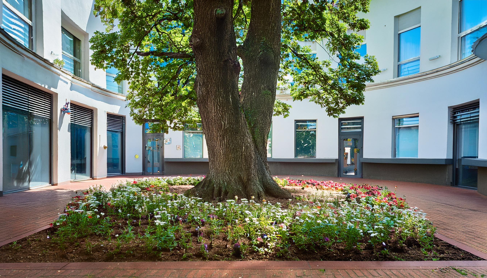

院長挨拶
こんにちは。
佐藤医院の院長、佐藤太郎と申します。
当院のホームページをご覧いただき、ありがとうございます。
佐藤医院では、「地域に根ざした医療」をモットーに、患者様一人ひとりに寄り添った医療を提供することを目指しております。日常的な健康管理から生活習慣病の予防、さらには専門的な診断や治療まで、幅広い内科診療を行い、地域の皆様の健康を支える役割を担っていきたいと考えております。
私たちは、患者様の不安を少しでも軽減し、安心して診療を受けていただけるよう、わかりやすい説明と丁寧な対応を心掛けております。また、近隣の医療機関とも連携し、必要に応じて高度医療へのアクセスもサポートいたします。どんな小さな不調でも、どうぞお気軽にご相談ください。
これからも、患者様の健康を第一に考え、地域の皆様に信頼される医療機関であり続けるため、スタッフ一同努力してまいります。どうぞよろしくお願いいたします。
佐藤医院 院長
診療内容
当院では、地域の皆様の健康を支えるため、幅広い内科診療を行っております。日常的な体調管理から、各種の検査や治療に至るまで、どんなお悩みもお気軽にご相談ください。
当院について
ABOUT
佐藤医院は、地域の皆様の健康を守り、より良い生活をサポートすることを使命としています。
創立以来、私たちは「患者様一人ひとりに寄り添った診療」を大切にし、地域密着型の医療を提供してまいりました。
今後も、皆様の健康維持と病気予防に貢献するため、より良い医療サービスを提供し続けることをお約束いたします。
